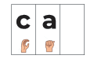

Welcome to "The Magic Phonic Blending Book" by Nancy Munyi, an innovative and indispensable resource tailored specifically for beginners, students with dyslexia, and hearing impaired people with dyslexia. The aim is to unlock the transformative power of blending sounds into words. As a dedicated special needs teacher, Nancy Munyi brings her passion, expertise, and unwavering commitment to inclusive education to the forefront, offering a beacon of hope and empowerment for learners facing unique challenges.
In the realm of education, Nancy Munyi stands as a guiding force, driven by a profound belief in the potential of every learner to succeed. Drawing upon her extensive experience in special education, Nancy has meticulously crafted this flip chart magic phonic blending book as a tool to bridge the gap between struggle and triumph, offering a pathway towards literacy that is both accessible and empowering.
For individuals grappling with dyslexia, the journey to literacy can be fraught with obstacles and frustration. Within the pages of this book, there are over 15,000 words that a learner can make. The power of nonsense or pseudo words exposes the learner to a strong blending skill and phonic manipulation like no other. Through the innovative use of visual aids, interactive exercises, and clear phonetic cues, learners are guided through the intricate process of blending sounds with confidence and clarity.
By incorporating the components of the Science of Reading, "The Magic Phonic Blending Book" provides a comprehensive and structured approach to literacy instruction, empowering beginners and students with dyslexia to become confident and proficient readers.
Embrace the journey. Embrace the blend.
Nancy Munyi
Most of the learners who struggle with reading have a high risk of developing low self-esteem and other forms of inferiority complexes. Magic Phonics Blending Book is a simplified tool that can be used to help these learners catch up. The book can be used by early-year readers, struggling readers, in adult literacy, home-schooling, and even learners with dyslexia. The book is a useful tool for teachers of preschool and lower primary, tutors of struggling readers and home schoolers.
The magic blending book introduces basic phonics. It contains many of the single letters and letter combinations that appear most commonly in English words. Students can work independently, with other students or with you. Flip through the cards yourself to find any difficult letter combinations or offensive words you may want to skip. Make sure students are familiar with the terms consonant and vowel. Also explain that each word must contain at least one vowel. Show students the first stack contains consonants, the second stack contains vowels, and the third stack contains mostly consonants.
As students work through the stacks, they will create both real words and non-word letter combinations. The letter combinations from the second and the third stacks that produce the most real words are listed on the back of this card. You may want to start with these word patterns. Pick a card from the vowel stack and a card from the third stack and have a student flip cards in the first stack. You may also want to tell students that many of the non-words they are pronouncing can actually be syllables in longer real words. Do not try to work on too many combinations in one sitting.
The Magic Blending book will help you learn to read words more quickly. Each letter stands for one or more sounds together to make a word. Start the Magic Blending Book with the first letter in each stack showing. How do you pronounce bab? Bab is not a real word.
Now flip up the bin the first stack. The letters are c-a-b. How do you pronounce c-a-b?
Continue to flip the letters in the first stack. Some sets of letters will be real words. Other sets won't be real words. When you have flipped the letters in the first stack, flip them back so the letters b-a-b show again. Now flip the bin the third stack so the ck shows (b-a-ck). Then begin flipping the letters in the first stack again to make other words with the a-ck pattern.
When you finish with the -ack pattern, you can continue with the other ending patterns that contain such -ad, -ag, and -all. You can also work on patterns that contain other vowels such as -ick, -op, -end and -ump.
Besides flipping the first stack, you can also flip the second or third stack. For example: you can pick letters in the first two stacks such as c and a.
keep those letters the same and flip the letters in the third stack or pick letters from the first and third stacks, such asp and t.
Keep those letters the same and flip the vowels in the second stack.. continue flipping cards in different stacks until you have made all the letter combinations that are possible.